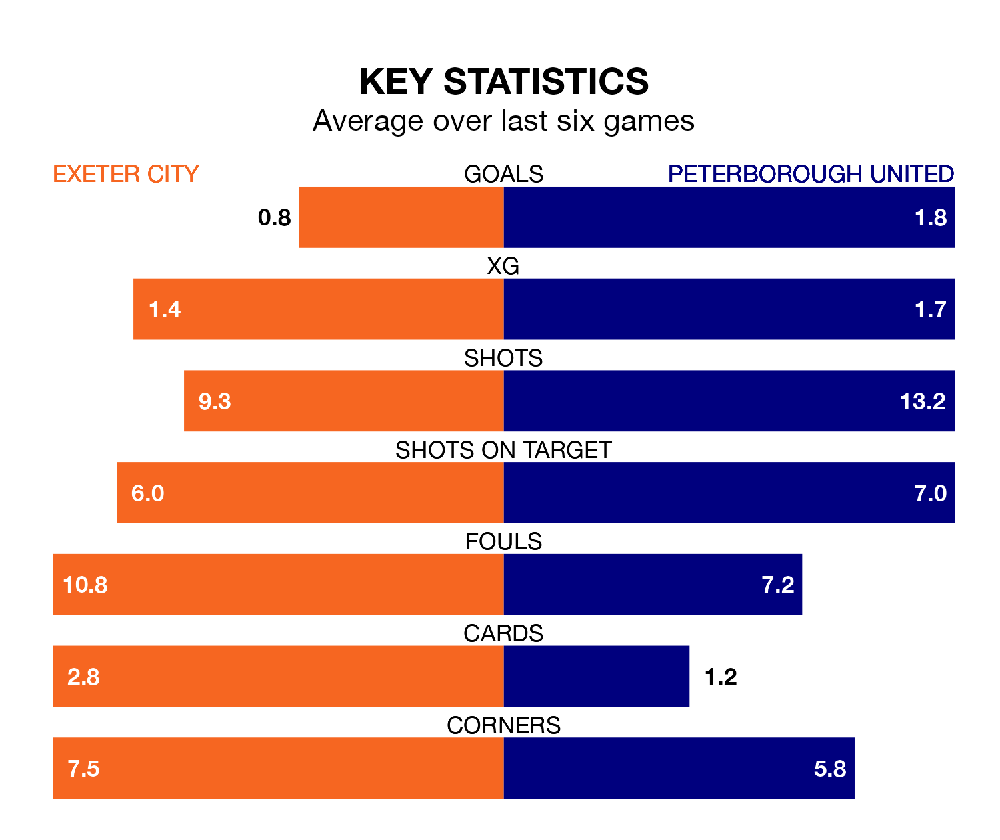

Peterborough United travel to St James Park for Tuesday's late match against Exeter City looking to bounce back from defeat last time out in EFL League One.
The Posh, who sit fourth in the league after 29 games, fell to a 3-2 home defeat to Wigan Athletic on Saturday.
They face an Exeter side who also lost their last match, a 1-0 defeat to Bristol Rovers, and who sit 16th in the table.
With 56 goals in 29 games so far this season, Peterborough are the league's highest scorers with 1.9 goals per game. And they are conceding fewer than average, letting in 32 goals at a rate of 1.1 per game.
Exeter, meanwhile, are below average scorers, with 0.7 goals per game, compared to a league average of 1.3. They have conceded 1.4 goals per game.
In Viljami Sinisalo, City can rely on one of the league's safest pair of hands. He has kept 10 clean sheets in his 29 appearances this season in EFL League One.
In United's net, Nicholas Bilokapic also has 10 clean sheets in 25 games.
The home side are in mixed form in EFL League One, with three wins and a draw from their last six games.
With three wins and two draws over that period, the Posh's form is slightly better – they have taken 11 points from 18, compared to Exeter's 10.
Over the last two years, Exeter and Peterborough have played each other twice. They won one each.
Their last meeting was on April 10, when Peterborough won 3-1 at home.
Tuesday's match will be refereed by Tom Reeves, who has taken charge of 10 EFL League One games so far this season, issuing two red cards and booking 36 players. He has awarded three penalties.
The last Exeter game Reeves refereed was a 1-0 away loss to Portsmouth on August 15. He is yet to oversee a match featuring Peterborough this season.
Updated: 10:28 (UTC), 06/02/24